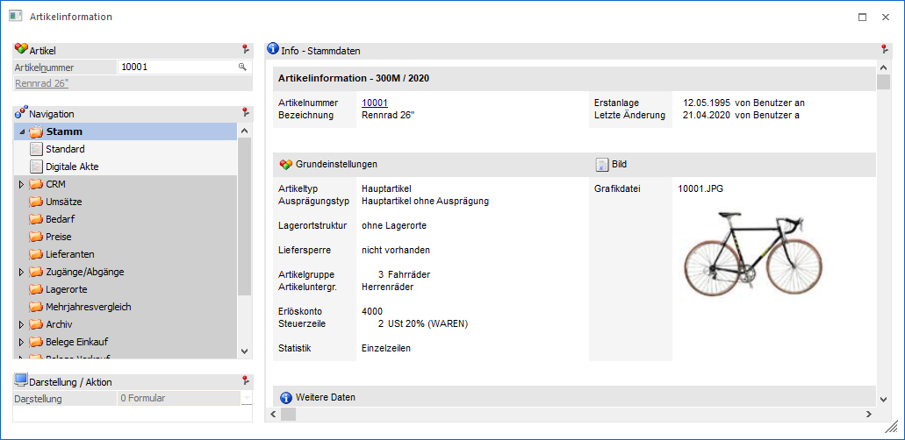
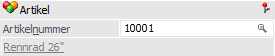
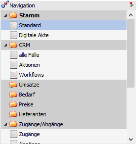
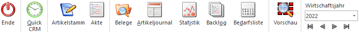

Die Artikelinformation wird über den Menüpunkt…
1 WinLine INFO
1 Info
1 Artikel
… aufgerufen und gibt alle Informationen zu dem gewählten Artikel aus. Die Auswahl des Artikels und der gewünschten Information erfolgt hierbei auf der linken Seite des Fensters, die Ausgabe der rechten Seite.
Hinweis
Mittels Drag & Drop können in dieses Fenster auch neue Archiveinträge für den Artikel hinzugefügt werden. Hierbei wird das Fenster "Neuer Archiveintrag" geöffnet und die Artikelnummer und die Artikelbezeichnung werden automatisch als Schlagwörter vorgeschlagen.

Artikel

Ø Artikelnummer
An dieser Stelle wird die Artikelnummer eingetragen, welche in der Folge betrachtet werden soll. Für die Suche steht neben dem Matchcode auch die Autovervollständigung zur Verfügung.
Hinweis
Es wird der zuletzt verwendete Artikel vorgeschlagen.
Ø Bezeichnung
Unterhalb der Artikelnummer wird die Artikelbezeichnung des ausgewählten Artikels angezeigt.
Navigation

Ø Navigation
Im linken Teil des Fensters befindet sich die Navigation, in welcher alle auszuwertenden Teilbereiche mit deren Unteransichten aufgelistet werden. Die Standardansicht wird hierbei in Fettschrift dargestellt und automatisch beim Öffnen der Info geladen (eine Änderung des Standards ist mit Hilfe der rechten Maustaste möglich).
Folgende Bereiche, welche in den nachfolgenden Kapiteln detailliert erläutert werden, stehen grundsätzlich zur Verfügung:
ü Bereich "Mehrjahresvergleich"
ü Bereich "Belege Einkauf / Belege Verkauf"
ü Bereich "Statistik Einkauf / Statistik Verkauf"
Hinweis
Der Inhalt der Navigation kann mit Hilfe des Programms Einstellungen - Ansicht individuell gestaltet werden.
Ø rechte Maustaste
Wenn in der Navigation die rechte Maustaste gedrückt wird, so stehen die folgenden Funktionen zur Verfügung:
ü Einstellungen
Durch Anwählen
dieses Eintrages kann das Fenster "Einstellungen
- Artikel" aufgerufen werden, in welchem Einstellungen für die
Artikelinformation vorgenommen werden können.
ü Artikelbedarfsvorschau
Es wird
die Artikelbedarfsvorschau für den aktuellen Artikel geöffnet.
ü Artikelinfo
Es wird das
Programm "Artikel Info" für den gewählten Artikel aufgerufen.
ü mit Shortcuts
Über die Funktion
"mit Shortcuts" können die Shortcuts zu den einzelnen Teilbereichen eingeblendet
werden. Diese Einstellung wird benutzerspezifisch abgespeichert.
ü Standardansicht
Über das
Kontextmenü kann zusätzlich bestimmt werden, welcher Bereich bzw. welche Ansicht
als Standardansicht verwendet werden soll (d.h. welche Informationen nach
Bestätigen der Artikelnummer als erstes dargestellt werden sollen).
Dazu muss
der gewünschte Ordner bzw. Eintrag angewählt und über die rechte Maustaste die
Funktion "Standardansicht" angeklickt werden. Anschließend wird dieser Eintrag
in Fettschrift dargestellt.
Darstellung / Aktion

In dem Bereich "Darstellung / Aktion" kann die Darstellung des gewählten Info-Bereichs (siehe "Navigation") definiert werden. Zusätzlich werden hier die Aktionen (Sonderbuttons) der jeweiligen Anzeige zur Verfügung gestellt.
Ø Darstellung
An dieser Stelle kann mit Hilfe einer Auswahlliste gewählt werden, ob die Darstellung der gewünschten Informationen in Form eines Formulars oder einer Tabelle erfolgen soll. Die gewählte Darstellung wird pro Info-Bereich benutzerspezifisch gespeichert.
Buttons

Wenn aus der Artikelinformation ein Programm der WinLine FAKT mit Hilfe der folgenden Buttons geöffnet und dort die Artikelnummer nicht verändert wird, so gelangt man bei deren Schließung automatisch wieder in die WinLine INFO zurück.
Ø Ende
Durch Anwahl des Buttons "Ende" bzw. der Taste ESC wird die Artikelinformation beendet.
Ø Quick CRM
Wenn dieser Button angeklickt wird, kann ein CRM-Fall zu dem gerade angezeigten Artikel erfasst werden. Voraussetzung dafür ist:
ü Es muss eine gültige CRM-Lizenz vorhanden sein.
ü Der Benutzer muss ein CRM-Benutzer sein.
ü Es müssen entsprechende CRM-Aktionen bzw. CRM-Workflows mit der Kennzeichnung "QUICK CRM" angelegt sein.
Hinweis
Es werden im WinLine Standard 9 CRM-Aktionen (CRM-Gruppe "100") mitgeliefert.
Ø Artikelstamm
Es wird der Artikelstamm in der WinLine FAKT geöffnet und der Artikel geladen.
Ø Akte
Durch Anklicken des Buttons "Akte" wird das Fenster "Akte" geöffnet, wo Detailinformationen zu diesem Artikel in Bezug auf andere Datenbereiche eingesehen werden können (nähere Information hierzu entnehmen Sie bitte dem Kapitel Akte).
Ø Belege
Durch Anwahl des Buttons "Belege" wird in der WinLine FAKT das Programm "Belege" in dem Modus "Info" geöffnet. In diesem werden alle Belege des Artikels, eingeschränkt auf das aktuelle Jahr, angezeigt.
Ø Artikeljournal
Mit diesem Button wird in die WinLine FAKT gewechselt und das Artikeljournal für den eingegebenen Artikel ausgegeben.
Ø Statistik
Wird dieser Button gedrückt, so wird in die WinLine FAKT gewechselt und die Verkaufsstatistik für den aktiven Artikel ausgegeben.
Ø Backlog
Beim Anklicken dieses Buttons wird in die WinLine FAKT gewechselt und das Backlog für den aktiven Artikel geöffnet.
Ø Bedarfsliste
Durch Drücken dieses Buttons wird in die WinLine FAKT gewechselt und die Bedarfsliste für den eingegebenen Artikel geöffnet.
Ø Vorschau
Durch Anwahl des Buttons "Vorschau" kann die Vorschau für Archiveinträge aktiviert werden.
Ø Wirtschaftsjahr
An dieser Stelle kann das Wirtschaftsjahr, von welchem die Daten angezeigt werden sollen, auswählen werden.
Ø VCR-Buttons
Über die so genannten VCR-Buttons kann durch Mausklick zwischen den Datensätzen geblättert werden.
ü  Damit kann der
erste Datensatz angesprochen werden.
Damit kann der
erste Datensatz angesprochen werden.
ü  Damit kann der
vorherige Datensatz angesprochen werden.
Damit kann der
vorherige Datensatz angesprochen werden.
ü  Damit kann der
nächste Datensatz angesprochen werden.
Damit kann der
nächste Datensatz angesprochen werden.
ü  Damit kann der
letzte Datensatz angesprochen werden.
Damit kann der
letzte Datensatz angesprochen werden.
Hinweis
Beim Blättern zwischen den Artikel-Datensätzen werden standardmäßig Ausprägungen "überblättert", d.h. es wird von einem Hauptartikel zum nächsten geblättert. Sollten auch Ausprägungen berücksichtigt werden, so muss beim Blättern zusätzlich die STRG-Taste gedrückt werden.